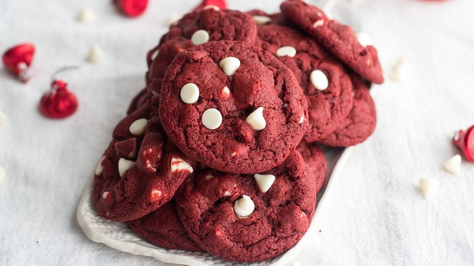

Red Velvet Cookies
Instructions
- Preheat the oven to 350°F. Take out two baking sheets and put parchment paper in them, then set them aside.
- Combine the dry ingredients: flour, cocoa powder, salt, baking soda, baking powder, and cream of tartar into a small bowl.
- Beat together butter and granulated sugar until fully combined and fluffy, in a large bowl.
- Add the eggs and vanilla extract into the butter/sugar mixture. Mix until batter is fluffy.
- Add in food coloring to the large bowl's mixture and mix well. Make sure that the color is evenly distributed throughout. You want to add enough food coloring so that the batter is a dark/vibrant red.
- Add the dry ingredients to the large bowl's mixture (the bowl with the food coloring), and mix well.
- You can now add 1 cup of white chocolate chips into the mixture if desired.
- Place even scoops of dough onto the pans that you prepared earlier. Be sure to leave around 2 inches between scoops.
- Place the cookies in the oven and bake for 8-9 minutes.
- Take the cookies out of the oven and immediately press a few of the remaining chocolate chips into the cookies while they are warm.
- Let the cookies cool on the pan for 2-3 minutes before transferring them to a cooling rack to cool all the way and enjoy!

Try hovering over (and following) the food coloring and chocolate chips!!

Ingredients
- 1 cup granulated sugar
- 1 1/2 cup all-purpose flour
- 2 eggs
- 1/2 cup cocoa powder
- 1/2 tsp cream of tartar
- 1/2 tsp baking soda
- 1/2 cup unsalted butter
- 1 tsp vanilla extract
- 1 1/2 tsp baking powder
- 1 tbsp red food coloring
- 1/4 tsp salt
- 2 cups white chocolate chips